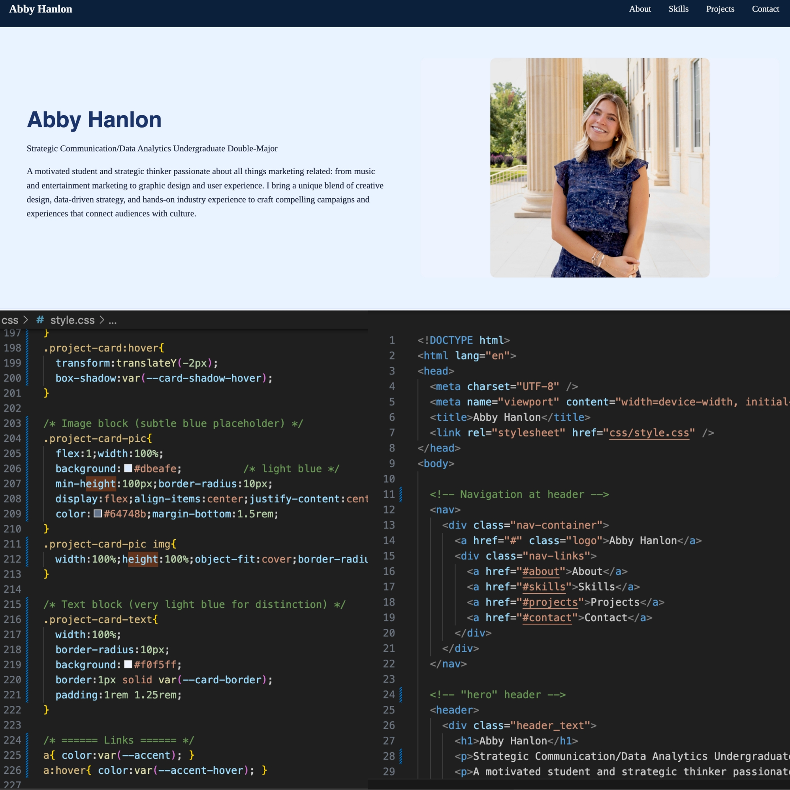

Class Website Project
A simple website I built using HTML and CSS for this class.
Skills used: HTML, CSS, Flexbox
Strategic Communication/Data Analytics Undergraduate Double-Major
A motivated student and strategic thinker passionate about all things marketing related: from music and entertainment marketing to graphic design and user experience. I bring a unique blend of creative design, data-driven strategy, and hands-on industry experience to craft compelling campaigns and experiences that connect audiences with culture.
My name is Abigail (Abby) Hanlon, and I’m currently a senior undergraduate with a double-major in Strategic Communication and Data Analytics at Texas Christian University in Fort Worth, Texas. I’m originally from the suburbs of Chicago, where I’ve been fortunate to have close exposure to a city full of opportunity and experiences that have shaped me into the person that I’ve become.
I’ve always been a visual learner and a creative thinker. From a young age, I enjoyed various forms of art media, and it was during my early high school years that I fell in love with graphic design. From there, I mastered the basics of Adobe platforms and have since served in various leadership roles through my sorority, on-campus clubs, and creative internships. I currently intern for an event planner as a graphic designer. I am a returning member of TCU’s student-led ad agency, Roxo, serving as the brand’s Digital Art Director. I have two years of experience working on a marketing team for Eventric, a software company in the music industry, where I significantly increased brand awareness and social media presence while adhering to their digital marketing guidelines.
I aim to pursue a career in the music/events market, and I'm interested in exploring job opportunities in Austin, Nashville, Chicago, or New York. The ever-changing world of marketing, advertising, and public relations mainly drives me. I am a perfectionist in the best way – I have a hard time giving up on something until I believe it looks perfect, and that’s where I strive to create meaningful content.
HTML, CSS, learning JavaScript
Digital Marketing, Visual Design, Client Work
VS Code, Git, GitHub
Writing, Presentations, Agency Work
A simple website I built using HTML and CSS for this class.
Skills used: HTML, CSS, Flexbox
Through Roxo Advertising + PR agency, I led and produced a successful digital marketing/communications rebrand for a mental health nonprofit local to the DFW area.
Skills used: Research, meeting fast-paced deadlines, strategic thinking, Adobe Creative Cloud
Throughout summer 2024 and 2025, I served as a digital marketing intern for Eventric, a software company in the music industry, creating a digital social media presence from scratch, and increasing company KPIs.
Skills used: Creative Direction, Social Media Marketing, Event Planning, Data-Driven Campaigns
Reach out to me at abby.hanlon@tcu.edu or connect with me on LinkedIn.